# install.packages(c(
# "tidyverse", "rdrobust", "rddensity", "modelsummary",
# "fixest", "broom", "patchwork", "scales", "janitor"
# ))
library(tidyverse)
library(rdrobust)
library(rddensity)
library(modelsummary)
library(fixest)
library(broom)
library(patchwork)
library(scales)
library(janitor)Manual completo de Regression Discontinuity Design (RDD) en R
Guía aplicada con datos sintéticos, gráficos, tablas, robustez e interpretación
1 1. Objetivo del manual
Este manual explica cómo realizar un análisis de Regression Discontinuity Design o RDD en R desde cero.
Está pensado para alguien que nunca ha estimado un RDD y necesita entender:
- qué es un RDD;
- qué efecto causal identifica;
- qué supuestos necesita;
- qué decisiones prácticas hay que tomar;
- qué gráficos y tests hay que producir;
- cuándo usar un diseño sharp, fuzzy, kink o donut;
- cuándo usar modelos paramétricos o no paramétricos;
- cómo interpretar resultados;
- cómo hacer análisis de robustez;
- cómo trabajar con múltiples cutoffs;
- cómo tratar outcomes binarios, proporciones o logs;
- cómo escribir un informe aplicado.
El documento usa datos sintéticos para que todos los bloques de código funcionen al renderizar el .qmd.
2 2. Paquetes
3 3. Qué es un RDD
Un Regression Discontinuity Design es un diseño cuasi-experimental que explota una regla de asignación basada en un umbral.
Ejemplos:
- una beca si la nota es mayor o igual que 5;
- una ayuda si la renta está por debajo de cierto umbral;
- una inspección si un score de riesgo supera cierto punto;
- una subvención si la población municipal es menor de 5.000 habitantes;
- una política pública que se activa si un indicador supera cierto valor.
La estructura básica es:
- existe una variable continua llamada running variable o variable de asignación, (X_i);
- existe un umbral o cutoff, (c);
- el tratamiento cambia de forma discontinua al cruzar el umbral.
En un RDD sharp típico:
[ D_i = 1(X_i c) ]
La lógica es que unidades justo por debajo y justo por encima del cutoff son muy parecidas. Si observamos un salto en el outcome justo en el cutoff, podemos interpretarlo como efecto causal del tratamiento bajo ciertos supuestos.
4 4. Intuición causal
Supongamos que una beca se concede si la nota es al menos 5.
Una persona con nota 4.99 y otra con nota 5.01 probablemente son similares. La diferencia relevante es que una no recibe la beca y la otra sí.
El RDD compara outcomes localmente alrededor del cutoff.
El estimando sharp básico es:
[ {SRD} = {x c} E[Y_i X_i=x] - _{x c} E[Y_i X_i=x] ]
Es decir:
diferencia entre el límite derecho y el límite izquierdo de la esperanza condicional del outcome en el cutoff.
5 5. Qué efecto causal identifica un RDD
Un RDD identifica un efecto local.
No responde necesariamente:
¿Cuál es el efecto medio del programa en toda la población?
Sino:
¿Cuál es el efecto para las unidades marginales alrededor del cutoff?
Esto es fundamental.
Si una política trata a municipios con población inferior a 5.000 habitantes, el RDD identifica el efecto para municipios alrededor de 5.000 habitantes. No identifica directamente el efecto para municipios de 300 habitantes ni para ciudades de 500.000.
5.1 5.1. Estimando sharp
En sharp RDD, cruzar el cutoff determina tratamiento.
[ D_i = 1(X_i c) ]
El parámetro es:
[ _{SRD} = E[Y_i(1)-Y_i(0) X_i=c] ]
bajo continuidad de los outcomes potenciales en el cutoff.
5.2 5.2. Estimando fuzzy
En fuzzy RDD, cruzar el cutoff cambia la probabilidad de tratamiento, pero no determina tratamiento perfectamente.
El estimando es:
[ _{FRD} = ]
Esto es un Wald local.
Se interpreta como un efecto local para los compliers alrededor del cutoff: unidades cuya recepción del tratamiento cambia por estar a un lado u otro del umbral.
6 6. Supuestos de identificación
6.1 6.1. Continuidad de outcomes potenciales
El supuesto central es que, en ausencia del tratamiento, no habría un salto en el outcome justo en el cutoff.
Formalmente:
[ E[Y_i(0)X_i=x] ]
debe ser continuo en (c).
En sharp RDD, también suele formularse como continuidad de ambos outcomes potenciales:
[ E[Y_i(0)X_i=x] E[Y_i(1)X_i=x] ]
en el cutoff.
Intuición:
Las unidades no tratadas justo debajo y las tratadas justo encima deberían ser comparables, salvo por el tratamiento.
6.2 6.2. No manipulación precisa de la running variable
Las unidades no deben poder manipular perfectamente (X_i) para situarse justo a un lado del cutoff.
Ejemplos problemáticos:
- estudiantes que consiguen redondear su nota justo por encima del aprobado;
- municipios que ajustan población declarada para entrar en una subvención;
- empresas que manipulan ingresos para quedar bajo un umbral fiscal.
Si hay manipulación precisa, las unidades a un lado y otro del cutoff pueden no ser comparables.
6.3 6.3. No coincidencia de otras políticas en el mismo cutoff
Si otra política cambia exactamente en el mismo umbral, el salto en (Y) puede deberse a varias cosas.
Ejemplo:
- a los 65 años se activa una pensión;
- pero también cambia la cobertura sanitaria;
- y además cambian incentivos fiscales.
En ese caso, el RDD identifica el efecto conjunto del paquete institucional, no necesariamente de una política concreta.
6.4 6.4. SUTVA y ausencia de spillovers
El tratamiento de una unidad no debería afectar al outcome de otra unidad cerca del cutoff.
Ejemplo de posible violación:
- una política municipal afecta a municipios vecinos;
- una beca cambia competencia entre estudiantes;
- una inspección a unas empresas desplaza actividad hacia otras.
6.5 6.5. Supuestos adicionales en fuzzy RDD
En fuzzy RDD se interpreta el cutoff como un instrumento local.
Necesitas:
- Relevancia: cruzar el cutoff cambia la probabilidad de tratamiento.
- Exclusión local: el cutoff afecta al outcome solo a través del tratamiento.
- Monotonicidad: cruzar el cutoff no reduce la probabilidad de tratamiento para algunas unidades mientras la aumenta para otras.
- Continuidad local: los potenciales outcomes y tratamientos son suaves alrededor del cutoff.
7 7. Qué NO es un RDD
No todo umbral genera un RDD creíble.
Un RDD no es convincente si:
- el cutoff se eligió después de ver outcomes;
- las unidades pueden manipular con precisión la running variable;
- el tratamiento no cambia realmente en el cutoff;
- hay otras políticas cambiando exactamente en el mismo cutoff;
- la running variable no está predeterminada;
- hay muy pocas observaciones cerca del umbral;
- el efecto se interpreta como si fuera para toda la población.
8 8. Tipos principales de RDD
8.2 8.2. Fuzzy RDD
En fuzzy RDD, cruzar el cutoff no determina perfectamente el tratamiento, pero cambia la probabilidad de recibirlo.
Ejemplo:
- ser elegible aumenta mucho la probabilidad de participar;
- pero algunos elegibles no participan;
- algunos no elegibles entran por otras vías.
Aquí el cutoff actúa como instrumento.
8.3 8.3. Regression Kink Design
En un kink design no se busca un salto en nivel, sino un cambio en la pendiente.
Ejemplos:
- una prestación cambia su tasa de crecimiento al llegar a cierto nivel de renta;
- un impuesto cambia su tipo marginal al cruzar un umbral;
- una fórmula de financiación cambia la pendiente de la asignación presupuestaria.
8.4 8.4. Donut RDD
Un donut RDD excluye observaciones muy cercanas al cutoff.
Se usa cuando sospechamos:
- manipulación local;
- redondeo;
- heaping;
- error de medida justo en el umbral;
- observaciones contaminadas cerca del cutoff.
9 9. Árbol de decisión
¿Hay una regla basada en un cutoff claro?
No → probablemente no hay RDD.
Sí →
¿El tratamiento cambia en el cutoff?
No → no hay RDD útil.
Sí →
¿El tratamiento cambia perfectamente de 0 a 1?
Sí → Sharp RDD.
No →
¿La probabilidad de tratamiento salta claramente?
Sí → Fuzzy RDD.
No → instrumento débil / no hay RDD convincente.
¿El cambio es en nivel o en pendiente?
Nivel → RDD clásico.
Pendiente → Regression Kink Design.
¿Hay manipulación o bunching cerca del cutoff?
Sí → considerar donut RDD o cuestionar validez.
No → continuar.
¿La running variable es discreta?
Sí → usar gráficos por bins, sensibilidad y cautela.
No → RDD estándar más natural.10 10. Flujo práctico recomendado
Un análisis RDD aplicado debería seguir este orden:
- Entender la regla institucional.
- Definir running variable, cutoff y tratamiento.
- Centrar la running variable si ayuda a interpretar.
- Graficar outcome contra running variable.
- Comprobar si el tratamiento cambia en el cutoff.
- Elegir sharp o fuzzy.
- Estimar especificación principal no paramétrica local.
- Revisar bandwidth elegido.
- Testear manipulación de la running variable.
- Comprobar continuidad de covariables predeterminadas.
- Hacer robustez a bandwidth, kernel y orden polinómico.
- Hacer placebo cutoffs y placebo outcomes.
- Considerar donut si hay razones.
- Considerar clustering si corresponde.
- Interpretar como efecto local.
- Exportar tablas y gráficos.
11 11. Crear datos sintéticos sharp RDD
Generamos una base donde el tratamiento se asigna perfectamente al cruzar el cutoff.
set.seed(123)
n <- 3000
cutoff <- 0
df_sharp <- tibble(
id = 1:n,
x = runif(n, -2, 2),
z1 = rnorm(n),
z2 = rbinom(n, 1, 0.5)
) |>
mutate(
treat = as.integer(x >= cutoff),
y0 = 2 + 1.5 * x + 0.8 * x^2 + 0.4 * z1 - 0.2 * z2 + rnorm(n, 0, 0.8),
tau = 1.5,
y = y0 + tau * treat
)
glimpse(df_sharp)Rows: 3,000
Columns: 8
$ id <int> 1, 2, 3, 4, 5, 6, 7, 8, 9, 10, 11, 12, 13, 14, 15, 16, 17, 18, 1…
$ x <dbl> -0.8496899, 1.1532205, -0.3640923, 1.5320696, 1.7618691, -1.8177…
$ z1 <dbl> -0.820986697, -0.307257233, -0.902098009, 0.627068743, 1.1203550…
$ z2 <int> 1, 1, 0, 1, 1, 0, 0, 0, 1, 0, 1, 0, 1, 1, 0, 1, 1, 1, 0, 0, 1, 1…
$ treat <int> 0, 1, 0, 1, 1, 0, 1, 1, 1, 0, 1, 0, 1, 1, 0, 1, 0, 0, 0, 1, 1, 1…
$ y0 <dbl> 0.2152663, 5.2680232, 0.6448766, 6.1439353, 7.8573849, 2.2812303…
$ tau <dbl> 1.5, 1.5, 1.5, 1.5, 1.5, 1.5, 1.5, 1.5, 1.5, 1.5, 1.5, 1.5, 1.5,…
$ y <dbl> 0.2152663, 6.7680232, 0.6448766, 7.6439353, 9.3573849, 2.2812303…El verdadero efecto causal local en el cutoff es 1.5.
12 12. Primer gráfico RDD
Antes de estimar, siempre hay que graficar.
ggplot(df_sharp, aes(x = x, y = y, color = factor(treat))) +
geom_point(alpha = 0.18) +
geom_vline(xintercept = cutoff, linetype = "dashed") +
geom_smooth(data = filter(df_sharp, x < cutoff), method = "lm", formula = y ~ poly(x, 2), se = FALSE) +
geom_smooth(data = filter(df_sharp, x >= cutoff), method = "lm", formula = y ~ poly(x, 2), se = FALSE) +
labs(
title = "RDD sharp: outcome frente a running variable",
x = "Running variable",
y = "Outcome",
color = "Tratado"
) +
theme_minimal()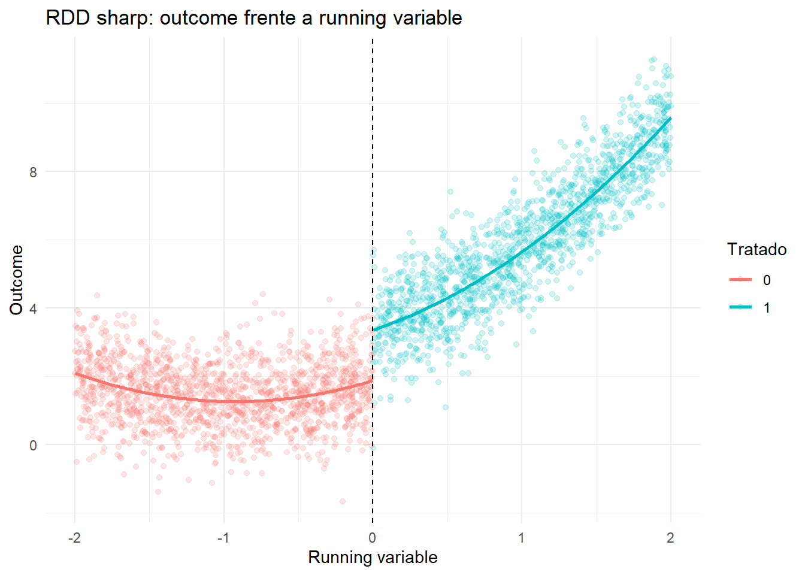
Interpretación:
- buscamos un salto vertical en (Y) justo en el cutoff;
- no buscamos pendientes iguales a ambos lados;
- permitimos relaciones suaves distintas a izquierda y derecha;
- lo importante es la discontinuidad en el punto de corte.
13 13. Gráfico manual por bins
Aunque rdplot() es muy cómodo, conviene saber construir un gráfico por bins manualmente.
df_bins <- df_sharp |>
mutate(
bin = cut(x, breaks = seq(-2, 2, by = 0.10), include.lowest = TRUE)
) |>
group_by(bin) |>
summarise(
x_mean = mean(x),
y_mean = mean(y),
n = n(),
.groups = "drop"
)
ggplot(df_bins, aes(x = x_mean, y = y_mean)) +
geom_point(aes(size = n), alpha = 0.75) +
geom_vline(xintercept = cutoff, linetype = "dashed") +
labs(
title = "Gráfico RDD manual por bins",
x = "Media de running variable en bin",
y = "Media de outcome en bin",
size = "N"
) +
theme_minimal()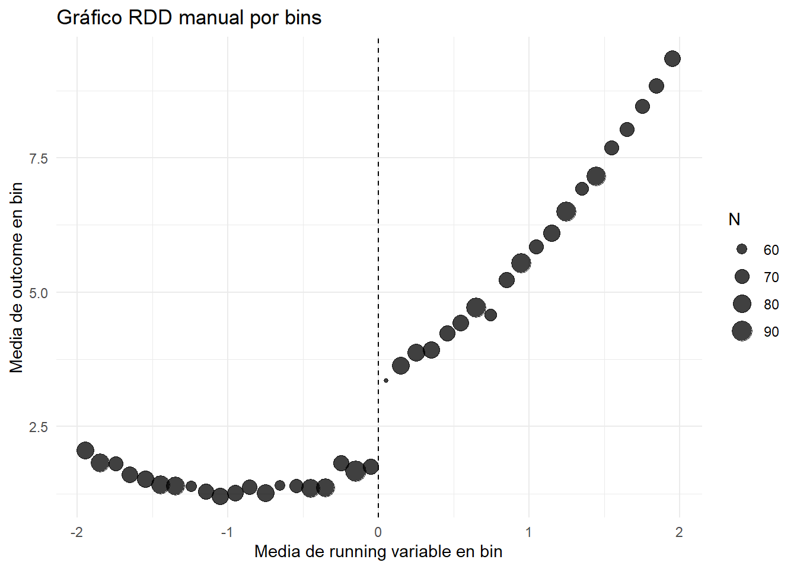
Este gráfico ayuda a ver el salto sin mostrar todos los puntos individuales.
14 14. RD plot automático con rdplot
rdplot(
y = df_sharp$y,
x = df_sharp$x,
c = cutoff,
title = "RD plot automático - Sharp RDD",
x.label = "Running variable",
y.label = "Outcome"
)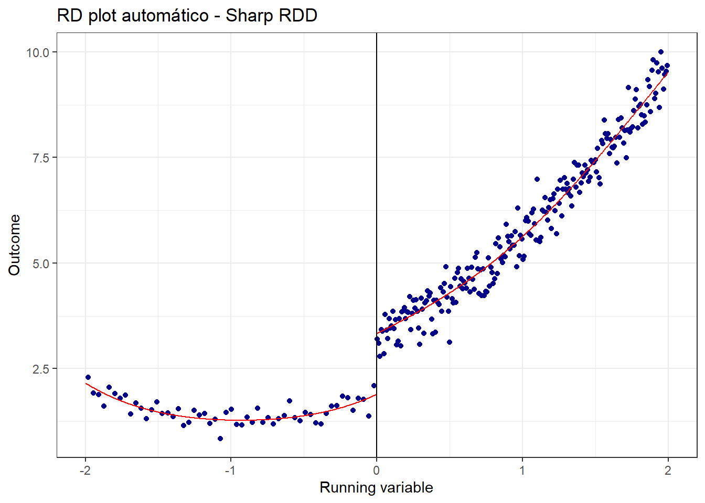
15 15. Estimación no paramétrica local con rdrobust
La especificación principal moderna suele ser una regresión local polinómica, normalmente local lineal, con selección automática de bandwidth y corrección robusta de sesgo.
rd_sharp <- rdrobust(
y = df_sharp$y,
x = df_sharp$x,
c = cutoff
)
summary(rd_sharp)Sharp RD estimates using local polynomial regression.
Number of Obs. 3000
BW type mserd
Kernel Triangular
VCE method NN
Number of Obs. 1516 1484
Eff. Number of Obs. 511 497
Order est. (p) 1 1
Order bias (q) 2 2
BW est. (h) 0.672 0.672
BW bias (b) 1.048 1.048
rho (h/b) 0.641 0.641
Unique Obs. 1516 1484
=====================================================================
Point Robust Inference
Estimate z P>|z| [ 95% C.I. ]
---------------------------------------------------------------------
RD Effect 1.449 8.085 0.000 [1.085 , 1.779]
=====================================================================16 16. Extraer resultados a tabla
sharp_table <- tibble(
estimador = c("Convencional", "Bias-corrected", "Robusto"),
tau = rd_sharp$coef[, 1],
se = rd_sharp$se[, 1],
z = rd_sharp$z[, 1],
p_value = rd_sharp$pv[, 1],
ci_low = rd_sharp$ci[, 1],
ci_high = rd_sharp$ci[, 2]
)
sharp_table# A tibble: 3 × 7
estimador tau se z p_value ci_low ci_high
<chr> <dbl> <dbl> <dbl> <dbl> <dbl> <dbl>
1 Convencional 1.45 0.145 10.0 1.42e-23 1.17 1.73
2 Bias-corrected 1.43 0.145 9.89 4.66e-23 1.15 1.72
3 Robusto 1.43 0.177 8.08 6.22e-16 1.08 1.78datasummary_df(sharp_table)| estimador | tau | se | z | p_value | ci_low | ci_high |
|---|---|---|---|---|---|---|
| Convencional | 1.45 | 0.14 | 10.01 | 0.00 | 1.17 | 1.73 |
| Bias-corrected | 1.43 | 0.14 | 9.89 | 0.00 | 1.15 | 1.72 |
| Robusto | 1.43 | 0.18 | 8.08 | 0.00 | 1.08 | 1.78 |
Líneas para exportar:
# write_csv(sharp_table, "salidas/rdd_sharp_resultados.csv")
# datasummary_df(sharp_table, output = "salidas/rdd_sharp_resultados.html")
# datasummary_df(sharp_table, output = "salidas/rdd_sharp_resultados.docx")17 17. Cómo interpretar rdrobust
Los elementos más importantes son:
Coef.: estimación del salto en el cutoff.Std. Err.: error estándar.z: estadístico de contraste.P>|z|: p-valor.- Intervalo de confianza.
- Bandwidths a izquierda y derecha.
- Número de observaciones usadas en cada lado.
Normalmente conviene reportar el resultado robusto a sesgo.
18 18. Por qué usar métodos no paramétricos locales
El RDD es local. La identificación viene de comparar observaciones cerca del cutoff.
Una regresión global usando toda la muestra puede ser engañosa si la relación entre (X) e (Y) es no lineal.
La idea no paramétrica local es:
- usar observaciones cercanas al cutoff;
- ponderar más las más cercanas;
- ajustar una función a cada lado;
- estimar el salto justo en el cutoff.
19 19. Bandwidth: la decisión clave
El bandwidth determina qué observaciones se usan alrededor del cutoff.
- bandwidth pequeño: menos sesgo, más varianza;
- bandwidth grande: más precisión, más riesgo de sesgo.
| Bandwidth | Sesgo | Varianza | Riesgo |
|---|---|---|---|
| Pequeño | Bajo | Alta | Poca potencia |
| Grande | Alto | Baja | Mala forma funcional |
Nunca deberías elegir bandwidth mirando qué especificación da significatividad. Lo correcto es usar un criterio data-driven y después mostrar sensibilidad.
bw_sharp <- rdbwselect(
y = df_sharp$y,
x = df_sharp$x,
c = cutoff
)
summary(bw_sharp)Call: rdbwselect
Number of Obs. 3000
BW type mserd
Kernel Triangular
VCE method NN
Number of Obs. 1516 1484
Order est. (p) 1 1
Order bias (q) 2 2
Unique Obs. 1516 1484
=======================================================
BW est. (h) BW bias (b)
Left of c Right of c Left of c Right of c
=======================================================
mserd 0.672 0.672 1.048 1.048
=======================================================20 20. Robustez a bandwidths
bandwidths <- c(0.25, 0.40, 0.60, 0.80, 1.00)
bw_results <- map_dfr(bandwidths, function(h) {
est <- rdrobust(
y = df_sharp$y,
x = df_sharp$x,
c = cutoff,
h = h
)
tibble(
bandwidth = h,
tau_robust = est$coef["Robust", 1],
se_robust = est$se["Robust", 1],
ci_low = est$ci["Robust", 1],
ci_high = est$ci["Robust", 2],
n_left = est$N_h[1],
n_right = est$N_h[2]
)
})
bw_results# A tibble: 5 × 7
bandwidth tau_robust se_robust ci_low ci_high n_left n_right
<dbl> <dbl> <dbl> <dbl> <dbl> <int> <int>
1 0.25 1.09 0.499 0.115 2.07 201 170
2 0.4 1.27 0.357 0.572 1.97 321 288
3 0.6 1.37 0.264 0.851 1.89 472 434
4 0.8 1.38 0.213 0.963 1.80 611 585
5 1 1.43 0.181 1.08 1.79 756 747ggplot(bw_results, aes(x = bandwidth, y = tau_robust)) +
geom_hline(yintercept = 1.5, linetype = "dotted") +
geom_point() +
geom_line() +
geom_errorbar(aes(ymin = ci_low, ymax = ci_high), width = 0.03) +
labs(
title = "Robustez a bandwidth",
x = "Bandwidth",
y = "Estimación robusta del salto"
) +
theme_minimal()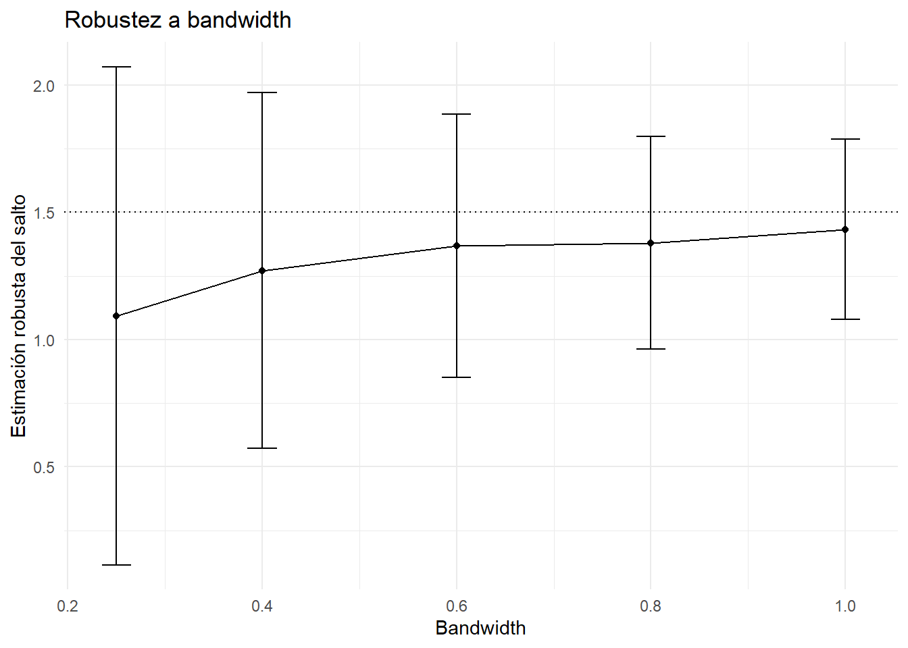
Interpretación:
- estabilidad en signo y magnitud aumenta credibilidad;
- sensibilidad extrema a bandwidth exige cautela;
- bandwidths muy pequeños pueden ser imprecisos;
- bandwidths muy grandes pueden introducir sesgo.
21 21. Robustez a orden del polinomio
La práctica moderna suele preferir local lineal (p = 1) o local cuadrático (p = 2) como sensibilidad.
Evita polinomios globales de alto orden como especificación principal.
poly_results <- map_dfr(c(1, 2), function(p_order) {
est <- rdrobust(
y = df_sharp$y,
x = df_sharp$x,
c = cutoff,
p = p_order
)
tibble(
p = p_order,
tau_robust = est$coef["Robust", 1],
se_robust = est$se["Robust", 1],
ci_low = est$ci["Robust", 1],
ci_high = est$ci["Robust", 2]
)
})
poly_results# A tibble: 2 × 5
p tau_robust se_robust ci_low ci_high
<dbl> <dbl> <dbl> <dbl> <dbl>
1 1 1.43 0.177 1.08 1.78
2 2 1.34 0.250 0.847 1.83datasummary_df(poly_results)| p | tau_robust | se_robust | ci_low | ci_high |
|---|---|---|---|---|
| 1.00 | 1.43 | 0.18 | 1.08 | 1.78 |
| 2.00 | 1.34 | 0.25 | 0.85 | 1.83 |
22 22. Robustez a kernel
El kernel triangular suele ser el estándar porque da más peso a observaciones cercanas al cutoff.
kernel_results <- map_dfr(c("triangular", "uniform", "epanechnikov"), function(k) {
est <- rdrobust(
y = df_sharp$y,
x = df_sharp$x,
c = cutoff,
kernel = k
)
tibble(
kernel = k,
tau_robust = est$coef["Robust", 1],
se_robust = est$se["Robust", 1],
ci_low = est$ci["Robust", 1],
ci_high = est$ci["Robust", 2]
)
})
kernel_results# A tibble: 3 × 5
kernel tau_robust se_robust ci_low ci_high
<chr> <dbl> <dbl> <dbl> <dbl>
1 triangular 1.43 0.177 1.08 1.78
2 uniform 1.50 0.143 1.22 1.79
3 epanechnikov 1.45 0.169 1.12 1.7823 23. Modelo paramétrico
Un enfoque paramétrico estima algo como:
[ Y_i = + D_i + f(X_i-c) + D_i g(X_i-c) + u_i ]
Permite distintas pendientes a cada lado del cutoff.
df_sharp <- df_sharp |>
mutate(
x_c = x - cutoff,
right = as.integer(x >= cutoff)
)
param_linear <- feols(
y ~ right + x_c + right:x_c,
data = df_sharp,
vcov = "hetero"
)
param_quad <- feols(
y ~ right + x_c + I(x_c^2) + right:x_c + right:I(x_c^2),
data = df_sharp,
vcov = "hetero"
)
modelsummary(
list(
"Lineal paramétrico" = param_linear,
"Cuadrático paramétrico" = param_quad
)
)| Lineal paramétrico | Cuadrático paramétrico | |
|---|---|---|
| (Intercept) | 1.406 | 1.873 |
| (0.048) | (0.069) | |
| right | 1.375 | 1.480 |
| (0.070) | (0.104) | |
| x_c | -0.100 | 1.331 |
| (0.042) | (0.161) | |
| right × x_c | 3.232 | 0.141 |
| (0.061) | (0.235) | |
| I(x_c^2) | 0.719 | |
| (0.079) | ||
| right × I(x_c^2) | 0.103 | |
| (0.113) | ||
| Num.Obs. | 3000 | 3000 |
| R2 | 0.882 | 0.889 |
| R2 Adj. | 0.882 | 0.889 |
| AIC | 8079.3 | 7896.4 |
| BIC | 8103.3 | 7932.4 |
| RMSE | 0.93 | 0.90 |
| Std.Errors | Heteroskedasticity-robust | Heteroskedasticity-robust |
# modelsummary(
# list("Lineal" = param_linear, "Cuadrático" = param_quad),
# output = "salidas/rdd_parametrico.html"
# )24 24. Cuándo usar paramétrico y cuándo no paramétrico
24.1 24.1. Usa no paramétrico local como especificación principal si:
- tienes suficientes observaciones cerca del cutoff;
- no quieres imponer forma funcional global;
- quieres seguir la práctica moderna;
- la relación entre (X) e (Y) parece no lineal;
- el objetivo es inferencia local.
24.2 24.2. Usa paramétrico como complemento si:
- quieres una especificación transparente;
- la relación parece aproximadamente lineal localmente;
- usas una ventana estrecha;
- quieres comparar sensibilidad.
24.3 24.3. Evita:
- polinomios globales de alto orden;
- usar toda la muestra si hay observaciones muy lejos del cutoff;
- elegir forma funcional porque da el resultado deseado.
25 25. Paramétrico local dentro de bandwidth
Una opción intermedia es estimar OLS solo dentro de una ventana local.
h_local <- 0.6
df_local <- df_sharp |>
filter(abs(x_c) <= h_local)
param_local <- feols(
y ~ right + x_c + right:x_c,
data = df_local,
vcov = "hetero"
)
modelsummary(
list(
"Paramétrico global lineal" = param_linear,
"Paramétrico local h=0.6" = param_local
)
)| Paramétrico global lineal | Paramétrico local h=0.6 | |
|---|---|---|
| (Intercept) | 1.406 | 1.835 |
| (0.048) | (0.085) | |
| right | 1.375 | 1.462 |
| (0.070) | (0.132) | |
| x_c | -0.100 | 0.962 |
| (0.042) | (0.242) | |
| right × x_c | 3.232 | 1.068 |
| (0.061) | (0.384) | |
| Num.Obs. | 3000 | 906 |
| R2 | 0.882 | 0.631 |
| R2 Adj. | 0.882 | 0.630 |
| AIC | 8079.3 | 2444.0 |
| BIC | 8103.3 | 2463.2 |
| RMSE | 0.93 | 0.93 |
| Std.Errors | Heteroskedasticity-robust | Heteroskedasticity-robust |
26 26. Cutoff distinto de cero y normalización
El cutoff no tiene que ser cero.
df_cutoff_5000 <- tibble(
poblacion = runif(2000, 1000, 9000)
) |>
mutate(
cutoff_pop = 5000,
x_c = poblacion - cutoff_pop,
treat_below = as.integer(poblacion < cutoff_pop),
y = 10 + 0.001 * poblacion + 2 * treat_below + rnorm(n())
)
rd_pop <- rdrobust(
y = df_cutoff_5000$y,
x = df_cutoff_5000$poblacion,
c = 5000
)
summary(rd_pop)Sharp RD estimates using local polynomial regression.
Number of Obs. 2000
BW type mserd
Kernel Triangular
VCE method NN
Number of Obs. 1034 966
Eff. Number of Obs. 344 318
Order est. (p) 1 1
Order bias (q) 2 2
BW est. (h) 1364.811 1364.811
BW bias (b) 2135.930 2135.930
rho (h/b) 0.639 0.639
Unique Obs. 1034 966
=====================================================================
Point Robust Inference
Estimate z P>|z| [ 95% C.I. ]
---------------------------------------------------------------------
RD Effect -1.886 -8.223 0.000 [-2.289 , -1.408]
=====================================================================Para gráficos y modelos paramétricos, suele ser cómodo trabajar con:
[ X_i - c ]
ggplot(df_cutoff_5000, aes(x = x_c, y = y)) +
geom_point(alpha = 0.2) +
geom_vline(xintercept = 0, linetype = "dashed") +
labs(
title = "Running variable centrada en el cutoff",
x = "Población - cutoff",
y = "Outcome"
) +
theme_minimal()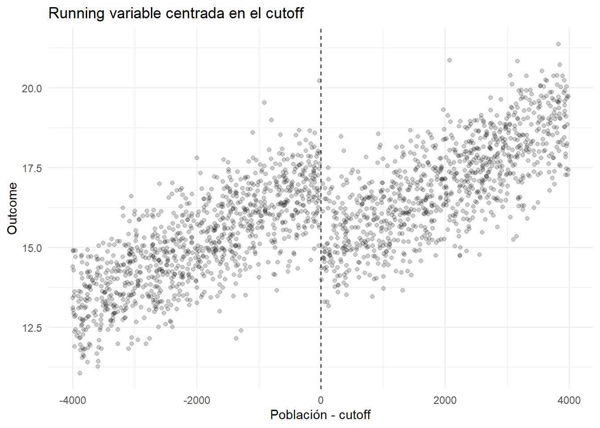
27 27. Tratamiento asignado por debajo del cutoff
Muchas políticas tratan por debajo del umbral:
- ayudas si renta <= umbral;
- subvenciones si población < 5.000;
- elegibilidad si vulnerabilidad supera un umbral, dependiendo de cómo se defina el score.
Si defines tratamiento como estar por debajo:
df_cutoff_5000 <- df_cutoff_5000 |>
mutate(
treated_below = as.integer(poblacion < 5000)
)El signo del salto depende de si comparas derecha menos izquierda o defines el tratamiento como estar abajo. Siempre hay que explicar qué lado es tratado.
28 28. Test de manipulación de la running variable
Un supuesto clave es que no haya manipulación precisa de (X).
density_test <- rddensity(
X = df_sharp$x,
c = cutoff
)
summary(density_test)
Manipulation testing using local polynomial density estimation.
Number of obs = 3000
Model = unrestricted
Kernel = triangular
BW method = estimated
VCE method = jackknife
c = 0 Left of c Right of c
Number of obs 1516 1484
Eff. Number of obs 567 581
Order est. (p) 2 2
Order bias (q) 3 3
BW est. (h) 0.745 0.791
Method T P > |T|
Robust -0.8016 0.4228
P-values of binomial tests (H0: p=0.5).
Window Length / 2 <c >=c P>|T|
0.039 27 20 0.3817
0.079 55 41 0.1843
0.118 85 73 0.3816
0.158 132 98 0.0293
0.197 165 131 0.0549
0.237 191 158 0.0866
0.276 226 197 0.1733
0.316 249 220 0.1960
0.355 288 253 0.1437
0.395 316 285 0.2210Interpretación:
- Hipótesis nula: no hay discontinuidad en la densidad en el cutoff.
- Si el p-valor es bajo, hay evidencia de sorting/manipulación.
- Si no rechazas, no demuestras validez, pero reduces una preocupación importante.
28.1 28.1. Gráfico de densidad
rdplotdensity(
rdd = density_test,
X = df_sharp$x
)
$Estl
Call: lpdensity
Sample size 1516
Polynomial order for point estimation (p=) 2
Order of derivative estimated (v=) 1
Polynomial order for confidence interval (q=) 3
Kernel function triangular
Scaling factor 0.505501833944648
Bandwidth method user provided
Use summary(...) to show estimates.
$Estr
Call: lpdensity
Sample size 1484
Polynomial order for point estimation (p=) 2
Order of derivative estimated (v=) 1
Polynomial order for confidence interval (q=) 3
Kernel function triangular
Scaling factor 0.494831610536846
Bandwidth method user provided
Use summary(...) to show estimates.
$Estplot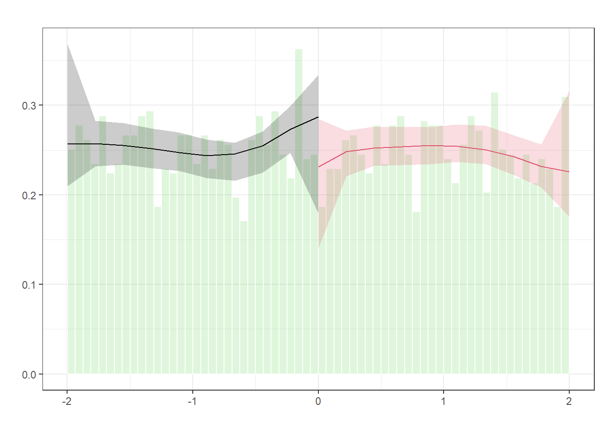
29 29. Balance de covariables predeterminadas
Comprobamos si covariables no afectadas por tratamiento saltan en el cutoff.
cov_z1 <- rdrobust(
y = df_sharp$z1,
x = df_sharp$x,
c = cutoff
)
cov_z2 <- rdrobust(
y = df_sharp$z2,
x = df_sharp$x,
c = cutoff
)
cov_balance <- tibble(
variable = c("z1", "z2"),
tau = c(cov_z1$coef["Robust", 1], cov_z2$coef["Robust", 1]),
se = c(cov_z1$se["Robust", 1], cov_z2$se["Robust", 1]),
p_value = c(cov_z1$pv["Robust", 1], cov_z2$pv["Robust", 1]),
ci_low = c(cov_z1$ci["Robust", 1], cov_z2$ci["Robust", 1]),
ci_high = c(cov_z1$ci["Robust", 2], cov_z2$ci["Robust", 2])
)
cov_balance# A tibble: 2 × 6
variable tau se p_value ci_low ci_high
<chr> <dbl> <dbl> <dbl> <dbl> <dbl>
1 z1 -0.135 0.205 0.512 -0.537 0.268
2 z2 0.0359 0.0959 0.708 -0.152 0.224datasummary_df(cov_balance)| variable | tau | se | p_value | ci_low | ci_high |
|---|---|---|---|---|---|
| z1 | -0.13 | 0.21 | 0.51 | -0.54 | 0.27 |
| z2 | 0.04 | 0.10 | 0.71 | -0.15 | 0.22 |
Interpretación:
- No queremos discontinuidades en variables predeterminadas.
- Si varias covariables saltan justo en el cutoff, puede haber sorting.
- Un p-valor alto no prueba continuidad, pero ayuda.
30 30. Covariables en la estimación principal
En RDD, las covariables no son necesarias para identificación si el diseño es válido. Se usan para:
- mejorar precisión;
- ajustar pequeños desequilibrios;
- comprobar robustez.
No deberían cambiar drásticamente el resultado.
rd_covs <- rdrobust(
y = df_sharp$y,
x = df_sharp$x,
c = cutoff,
covs = as.matrix(df_sharp[, c("z1", "z2")])
)
summary(rd_covs)Covariate-adjusted Sharp RD estimates using local polynomial regression.
Number of Obs. 3000
BW type mserd
Kernel Triangular
VCE method NN
Number of Obs. 1516 1484
Eff. Number of Obs. 418 374
Order est. (p) 1 1
Order bias (q) 2 2
BW est. (h) 0.518 0.518
BW bias (b) 0.855 0.855
rho (h/b) 0.606 0.606
Unique Obs. 1516 1484
=====================================================================
Point Robust Inference
Estimate z P>|z| [ 95% C.I. ]
---------------------------------------------------------------------
RD Effect 1.491 8.187 0.000 [1.110 , 1.808]
=====================================================================Comparación:
cov_compare <- tibble(
modelo = c("Sin covariables", "Con covariables"),
tau = c(rd_sharp$coef["Robust", 1], rd_covs$coef["Robust", 1]),
se = c(rd_sharp$se["Robust", 1], rd_covs$se["Robust", 1]),
ci_low = c(rd_sharp$ci["Robust", 1], rd_covs$ci["Robust", 1]),
ci_high = c(rd_sharp$ci["Robust", 2], rd_covs$ci["Robust", 2])
)
cov_compare# A tibble: 2 × 5
modelo tau se ci_low ci_high
<chr> <dbl> <dbl> <dbl> <dbl>
1 Sin covariables 1.43 0.177 1.08 1.78
2 Con covariables 1.46 0.178 1.11 1.81Regla práctica:
En un buen RDD, añadir covariables debería mejorar precisión, no transformar completamente el estimador.
31 31. Placebo cutoffs
Estimamos falsos cutoffs donde no debería haber tratamiento.
placebo_cutoffs <- c(-1.0, -0.5, 0.5, 1.0)
placebo_results <- map_dfr(placebo_cutoffs, function(c0) {
est <- rdrobust(
y = df_sharp$y,
x = df_sharp$x,
c = c0
)
tibble(
cutoff_placebo = c0,
tau_robust = est$coef["Robust", 1],
se_robust = est$se["Robust", 1],
ci_low = est$ci["Robust", 1],
ci_high = est$ci["Robust", 2],
p_value = est$pv["Robust", 1]
)
})
placebo_results# A tibble: 4 × 6
cutoff_placebo tau_robust se_robust ci_low ci_high p_value
<dbl> <dbl> <dbl> <dbl> <dbl> <dbl>
1 -1 0.127 0.196 -0.256 0.511 0.515
2 -0.5 -0.0814 0.176 -0.426 0.263 0.644
3 0.5 0.0919 0.201 -0.301 0.485 0.647
4 1 -0.144 0.188 -0.513 0.226 0.446ggplot(placebo_results, aes(x = factor(cutoff_placebo), y = tau_robust)) +
geom_hline(yintercept = 0, linetype = "dashed") +
geom_point() +
geom_errorbar(aes(ymin = ci_low, ymax = ci_high), width = 0.15) +
labs(
title = "Placebo cutoffs",
x = "Cutoff falso",
y = "Salto estimado"
) +
theme_minimal()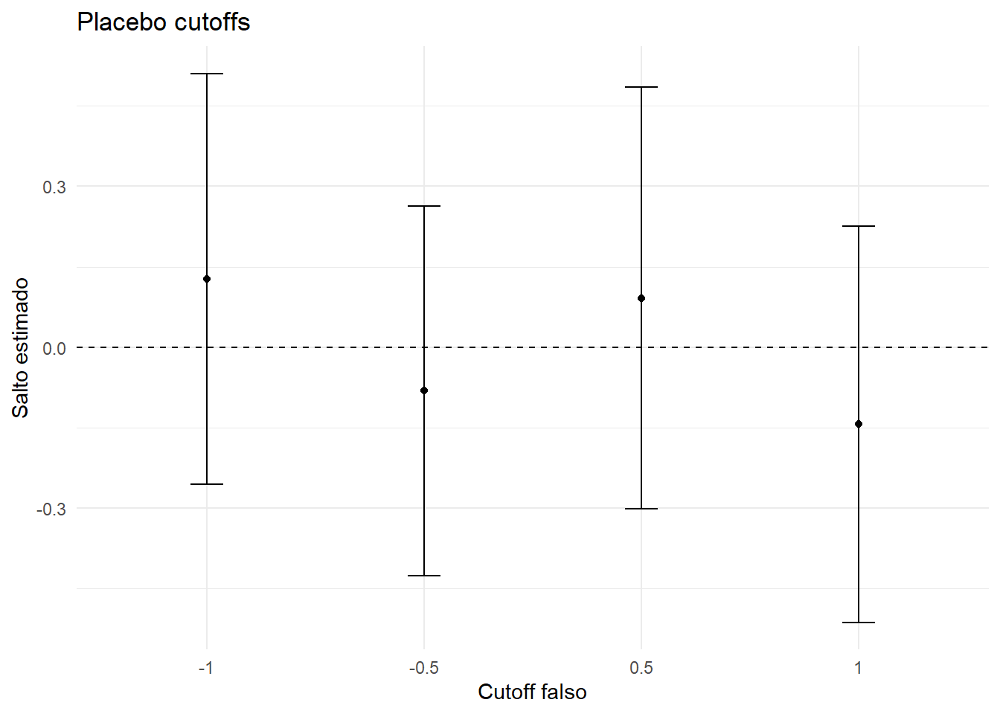
32 32. Placebo outcomes
Un placebo outcome es una variable que no debería verse afectada por el tratamiento.
Ejemplo: outcome medido antes del tratamiento o variable histórica.
set.seed(42)
df_sharp <- df_sharp |>
mutate(
y_pre_placebo = 2 + 1.3 * x + 0.4 * x^2 + rnorm(n(), 0, 0.8)
)
rd_placebo_y <- rdrobust(
y = df_sharp$y_pre_placebo,
x = df_sharp$x,
c = cutoff
)
summary(rd_placebo_y)Sharp RD estimates using local polynomial regression.
Number of Obs. 3000
BW type mserd
Kernel Triangular
VCE method NN
Number of Obs. 1516 1484
Eff. Number of Obs. 460 418
Order est. (p) 1 1
Order bias (q) 2 2
BW est. (h) 0.579 0.579
BW bias (b) 0.903 0.903
rho (h/b) 0.641 0.641
Unique Obs. 1516 1484
=====================================================================
Point Robust Inference
Estimate z P>|z| [ 95% C.I. ]
---------------------------------------------------------------------
RD Effect 0.097 0.531 0.596 [-0.221 , 0.386]
=====================================================================Si encuentras un salto claro en un outcome que no debería responder al tratamiento, es mala señal.
33 33. Donut RDD
Excluimos observaciones muy cercanas al cutoff.
donut_radius <- 0.10
df_donut <- df_sharp |>
filter(abs(x - cutoff) > donut_radius)
rd_donut <- rdrobust(
y = df_donut$y,
x = df_donut$x,
c = cutoff
)
summary(rd_donut)Sharp RD estimates using local polynomial regression.
Number of Obs. 2872
BW type mserd
Kernel Triangular
VCE method NN
Number of Obs. 1443 1429
Eff. Number of Obs. 435 438
Order est. (p) 1 1
Order bias (q) 2 2
BW est. (h) 0.668 0.668
BW bias (b) 1.256 1.256
rho (h/b) 0.532 0.532
Unique Obs. 1443 1429
=====================================================================
Point Robust Inference
Estimate z P>|z| [ 95% C.I. ]
---------------------------------------------------------------------
RD Effect 1.471 6.822 0.000 [1.064 , 1.923]
=====================================================================Comparación:
donut_compare <- tibble(
modelo = c("Principal", "Donut |x| > 0.10"),
tau = c(rd_sharp$coef["Robust", 1], rd_donut$coef["Robust", 1]),
se = c(rd_sharp$se["Robust", 1], rd_donut$se["Robust", 1]),
ci_low = c(rd_sharp$ci["Robust", 1], rd_donut$ci["Robust", 1]),
ci_high = c(rd_sharp$ci["Robust", 2], rd_donut$ci["Robust", 2])
)
donut_compare# A tibble: 2 × 5
modelo tau se ci_low ci_high
<chr> <dbl> <dbl> <dbl> <dbl>
1 Principal 1.43 0.177 1.08 1.78
2 Donut |x| > 0.10 1.49 0.219 1.06 1.92datasummary_df(donut_compare)| modelo | tau | se | ci_low | ci_high |
|---|---|---|---|---|
| Principal | 1.43 | 0.18 | 1.08 | 1.78 |
| Donut |x| > 0.10 | 1.49 | 0.22 | 1.06 | 1.92 |
Interpretación:
- Si el resultado cambia mucho, puede haber manipulación o error local.
- Si es estable, aumenta credibilidad.
- Donut debe estar justificado institucionalmente.
34 34. Datos sintéticos con manipulación cerca del cutoff
set.seed(321)
x_raw <- runif(n, -2, 2)
x_manip <- ifelse(
x_raw > -0.15 & x_raw < 0,
x_raw + runif(n, 0.10, 0.25),
x_raw
)
df_manip <- tibble(
id = 1:n,
x = x_manip,
treat = as.integer(x >= cutoff),
y = 2 + 1.2 * x + 1.5 * treat + rnorm(n)
)
dens_manip <- rddensity(
X = df_manip$x,
c = cutoff
)
summary(dens_manip)
Manipulation testing using local polynomial density estimation.
Number of obs = 3000
Model = unrestricted
Kernel = triangular
BW method = estimated
VCE method = jackknife
c = 0 Left of c Right of c
Number of obs 1386 1614
Eff. Number of obs 356 458
Order est. (p) 2 2
Order bias (q) 3 3
BW est. (h) 0.631 0.508
Method T P > |T|
Robust 9.3931 0
P-values of binomial tests (H0: p=0.5).
Window Length <c >=c P>|T|
0.171 + 0.171 20 198 0.0000
0.222 + 0.209 45 234 0.0000
0.274 + 0.246 89 261 0.0000
0.325 + 0.283 126 284 0.0000
0.376 + 0.321 165 315 0.0000
0.427 + 0.358 204 335 0.0000
0.478 + 0.396 252 367 0.0000
0.529 + 0.433 288 412 0.0000
0.580 + 0.470 322 437 0.0000
0.631 + 0.508 356 458 0.0004rdplotdensity(
rdd = dens_manip,
X = df_manip$x
)
$Estl
Call: lpdensity
Sample size 1386
Polynomial order for point estimation (p=) 2
Order of derivative estimated (v=) 1
Polynomial order for confidence interval (q=) 3
Kernel function triangular
Scaling factor 0.46215405135045
Bandwidth method user provided
Use summary(...) to show estimates.
$Estr
Call: lpdensity
Sample size 1614
Polynomial order for point estimation (p=) 2
Order of derivative estimated (v=) 1
Polynomial order for confidence interval (q=) 3
Kernel function triangular
Scaling factor 0.538179393131044
Bandwidth method user provided
Use summary(...) to show estimates.
$Estplot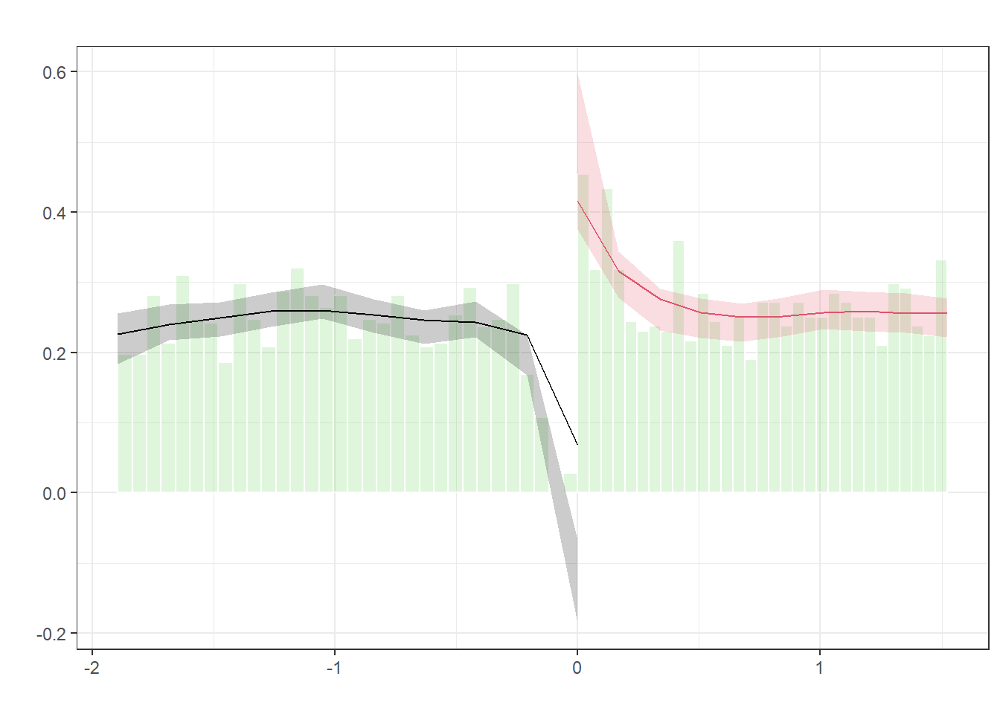
35 35. Donut en datos manipulados
rd_manip <- rdrobust(
y = df_manip$y,
x = df_manip$x,
c = cutoff
)
df_manip_donut <- df_manip |>
filter(abs(x - cutoff) > 0.15)
rd_manip_donut <- rdrobust(
y = df_manip_donut$y,
x = df_manip_donut$x,
c = cutoff
)
manip_compare <- tibble(
modelo = c("Principal con posible manipulación", "Donut excluyendo |x| <= 0.15"),
tau = c(rd_manip$coef["Robust", 1], rd_manip_donut$coef["Robust", 1]),
se = c(rd_manip$se["Robust", 1], rd_manip_donut$se["Robust", 1]),
ci_low = c(rd_manip$ci["Robust", 1], rd_manip_donut$ci["Robust", 1]),
ci_high = c(rd_manip$ci["Robust", 2], rd_manip_donut$ci["Robust", 2])
)
manip_compare# A tibble: 2 × 5
modelo tau se ci_low ci_high
<chr> <dbl> <dbl> <dbl> <dbl>
1 Principal con posible manipulación 1.30 0.235 0.842 1.76
2 Donut excluyendo |x| <= 0.15 1.02 0.369 0.300 1.7536 36. Fuzzy RDD
Generamos un caso donde cruzar el cutoff aumenta la probabilidad de tratamiento, pero no lo determina perfectamente.
set.seed(456)
df_fuzzy <- tibble(
id = 1:n,
x = runif(n, -2, 2),
z1 = rnorm(n)
) |>
mutate(
eligible = as.integer(x >= cutoff),
p_treat = if_else(eligible == 1, 0.75, 0.25),
treat = rbinom(n, 1, p_treat),
y0 = 1 + 1.2 * x + 0.5 * x^2 + 0.3 * z1 + rnorm(n, 0, 0.8),
tau = 2.0,
y = y0 + tau * treat
)
glimpse(df_fuzzy)Rows: 3,000
Columns: 9
$ id <int> 1, 2, 3, 4, 5, 6, 7, 8, 9, 10, 11, 12, 13, 14, 15, 16, 17, 18…
$ x <dbl> -1.6417936, -1.1579507, 0.9318211, 1.4085342, 1.1535916, -0.6…
$ z1 <dbl> -1.013368396, 0.675572126, -0.159393441, -0.451036577, -0.892…
$ eligible <int> 0, 0, 1, 1, 1, 0, 0, 0, 0, 0, 0, 0, 1, 1, 1, 1, 1, 0, 1, 0, 0…
$ p_treat <dbl> 0.25, 0.25, 0.75, 0.75, 0.75, 0.25, 0.25, 0.25, 0.25, 0.25, 0…
$ treat <int> 0, 1, 0, 1, 1, 0, 1, 0, 0, 0, 0, 0, 1, 0, 1, 1, 1, 0, 1, 1, 1…
$ y0 <dbl> 0.6206334, -0.2335526, 1.5192470, 3.2398778, 3.7169140, 1.557…
$ tau <dbl> 2, 2, 2, 2, 2, 2, 2, 2, 2, 2, 2, 2, 2, 2, 2, 2, 2, 2, 2, 2, 2…
$ y <dbl> 0.6206334, 1.7664474, 1.5192470, 5.2398778, 5.7169140, 1.5570…37 37. Primer paso fuzzy
Antes de estimar fuzzy RDD, hay que comprobar que la probabilidad de tratamiento salta.
rdplot(
y = df_fuzzy$treat,
x = df_fuzzy$x,
c = cutoff,
title = "Fuzzy RDD: salto en probabilidad de tratamiento",
x.label = "Running variable",
y.label = "Probabilidad de tratamiento"
)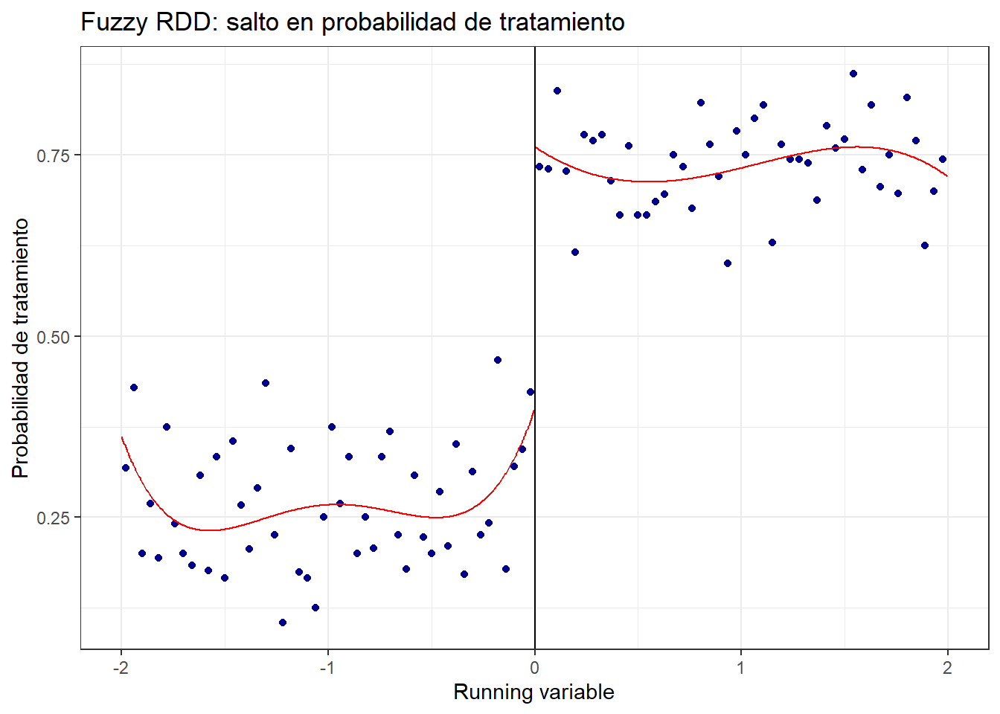
first_stage <- rdrobust(
y = df_fuzzy$treat,
x = df_fuzzy$x,
c = cutoff
)
summary(first_stage)Sharp RD estimates using local polynomial regression.
Number of Obs. 3000
BW type mserd
Kernel Triangular
VCE method NN
Number of Obs. 1477 1523
Eff. Number of Obs. 455 448
Order est. (p) 1 1
Order bias (q) 2 2
BW est. (h) 0.596 0.596
BW bias (b) 0.941 0.941
rho (h/b) 0.633 0.633
Unique Obs. 1477 1523
=====================================================================
Point Robust Inference
Estimate z P>|z| [ 95% C.I. ]
---------------------------------------------------------------------
RD Effect 0.386 4.675 0.000 [0.216 , 0.527]
=====================================================================Interpretación:
- sin salto en tratamiento, no hay fuzzy RDD convincente;
- si el salto es pequeño, hay preocupación de instrumento débil;
- siempre hay que reportar el primer paso.
38 38. Estimar fuzzy RDD con rdrobust
rd_fuzzy <- rdrobust(
y = df_fuzzy$y,
x = df_fuzzy$x,
c = cutoff,
fuzzy = df_fuzzy$treat
)
summary(rd_fuzzy)Fuzzy RD estimates using local polynomial regression.
Number of Obs. 3000
BW type mserd
Kernel Triangular
VCE method NN
Number of Obs. 1477 1523
Eff. Number of Obs. 532 532
Order est. (p) 1 1
Order bias (q) 2 2
BW est. (h) 0.695 0.695
BW bias (b) 1.113 1.113
rho (h/b) 0.625 0.625
Unique Obs. 1477 1523
First-stage estimates.
=====================================================================
Point Robust Inference
Estimate z P>|z| [ 95% C.I. ]
=====================================================================
Rd Effect 0.394 5.198 0.000 [0.238 , 0.526]
=====================================================================
Treatment effect estimates.
=====================================================================
Point Robust Inference
Estimate z P>|z| [ 95% C.I. ]
---------------------------------------------------------------------
RD Effect 2.146 6.288 0.000 [1.506 , 2.870]
=====================================================================Tabla:
fuzzy_table <- tibble(
estimador = c("Convencional", "Bias-corrected", "Robusto"),
tau = rd_fuzzy$coef[, 1],
se = rd_fuzzy$se[, 1],
p_value = rd_fuzzy$pv[, 1],
ci_low = rd_fuzzy$ci[, 1],
ci_high = rd_fuzzy$ci[, 2]
)
fuzzy_table# A tibble: 3 × 6
estimador tau se p_value ci_low ci_high
<chr> <dbl> <dbl> <dbl> <dbl> <dbl>
1 Convencional 2.15 0.292 2.13e-13 1.57 2.72
2 Bias-corrected 2.19 0.292 7.25e-14 1.61 2.76
3 Robusto 2.19 0.348 3.21e-10 1.51 2.87datasummary_df(fuzzy_table)| estimador | tau | se | p_value | ci_low | ci_high |
|---|---|---|---|---|---|
| Convencional | 2.15 | 0.29 | 0.00 | 1.57 | 2.72 |
| Bias-corrected | 2.19 | 0.29 | 0.00 | 1.61 | 2.76 |
| Robusto | 2.19 | 0.35 | 0.00 | 1.51 | 2.87 |
39 39. Fuzzy RDD como IV/2SLS paramétrico
También se puede entender fuzzy RDD como un IV local.
- Instrumento: elegibilidad inducida por cutoff.
- Variable endógena: tratamiento recibido.
- Outcome: (Y).
df_fuzzy <- df_fuzzy |>
mutate(
x_c = x - cutoff,
right = as.integer(x >= cutoff)
)
df_fuzzy_local <- df_fuzzy |>
filter(abs(x_c) <= 0.8)
fuzzy_iv <- feols(
y ~ x_c + right:x_c | 0 | treat ~ right,
data = df_fuzzy_local,
vcov = "hetero"
)
summary(fuzzy_iv)TSLS estimation - Dep. Var.: y
Endo. : treat
Instr. : right
Second stage: Dep. Var.: y
Observations: 1,223
Standard-errors: Heteroskedasticity-robust
Estimate Std. Error t value Pr(>|t|)
(Intercept) 0.887758 0.127963 6.93761 6.4585e-12 ***
fit_treat 2.088892 0.220810 9.46012 < 2.2e-16 ***
x_c 0.724960 0.162623 4.45792 9.0379e-06 ***
x_c:right 0.875629 0.213958 4.09252 4.5477e-05 ***
---
Signif. codes: 0 '***' 0.001 '**' 0.01 '*' 0.05 '.' 0.1 ' ' 1
RMSE: 0.840882 Adj. R2: 0.716337
F-test (1st stage), treat: stat = 66.6 , p = 8.303e-16, on 1 and 1,219 DoF.
Wu-Hausman: stat = 0.024004, p = 0.8769 , on 1 and 1,218 DoF.modelsummary(
list("Fuzzy RDD paramétrico local IV" = fuzzy_iv)
)| Fuzzy RDD paramétrico local IV | |
|---|---|
| (Intercept) | 0.888 |
| (0.128) | |
| fit_treat | 2.089 |
| (0.221) | |
| x_c | 0.725 |
| (0.163) | |
| x_c × right | 0.876 |
| (0.214) | |
| Num.Obs. | 1223 |
| R2 | 0.717 |
| R2 Adj. | 0.716 |
| AIC | 3054.8 |
| BIC | 3075.3 |
| RMSE | 0.84 |
| Std.Errors | Heteroskedasticity-robust |
Esto no sustituye necesariamente a rdrobust(fuzzy = ...), pero ayuda a entender el estimador.
40 40. Cuándo usar sharp y cuándo fuzzy
Usa sharp RDD si:
- cruzar el cutoff determina perfectamente tratamiento;
- no hay incumplimiento;
- estar a un lado equivale a recibir tratamiento.
Usa fuzzy RDD si:
- el cutoff determina elegibilidad, no tratamiento perfecto;
- hay non-compliance;
- hay un salto claro en probabilidad de tratamiento.
41 41. Regression Kink Design
En un kink design buscamos un cambio de pendiente.
set.seed(789)
df_kink <- tibble(
id = 1:n,
x = runif(n, -2, 2)
) |>
mutate(
right = as.integer(x >= cutoff),
slope_change = pmax(x - cutoff, 0),
y = 1 + 1.0 * x + 1.8 * slope_change + rnorm(n, 0, 0.5)
)
ggplot(df_kink, aes(x = x, y = y)) +
geom_point(alpha = 0.18) +
geom_vline(xintercept = cutoff, linetype = "dashed") +
geom_smooth(data = filter(df_kink, x < cutoff), method = "lm", se = FALSE) +
geom_smooth(data = filter(df_kink, x >= cutoff), method = "lm", se = FALSE) +
labs(
title = "Regression Kink Design sintético",
x = "Running variable",
y = "Outcome"
) +
theme_minimal()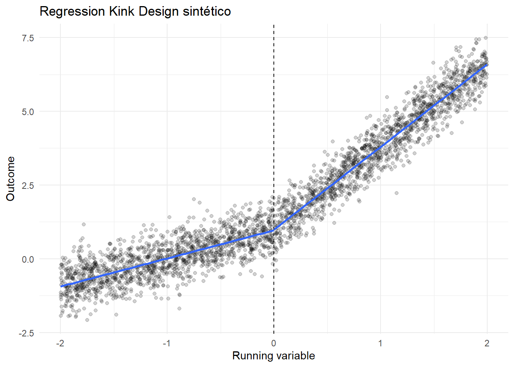
Estimación paramétrica simple:
kink_param <- feols(
y ~ x + I(pmax(x - cutoff, 0)),
data = df_kink,
vcov = "hetero"
)
modelsummary(kink_param)| (1) | |
|---|---|
| (Intercept) | 0.978 |
| (0.018) | |
| x | 0.961 |
| (0.018) | |
| I(pmax(x - 0, 0)) | 1.855 |
| (0.032) | |
| Num.Obs. | 3000 |
| R2 | 0.954 |
| R2 Adj. | 0.954 |
| AIC | 4297.8 |
| BIC | 4315.8 |
| RMSE | 0.49 |
| Std.Errors | Heteroskedasticity-robust |
El coeficiente de pmax(x - cutoff, 0) mide el cambio de pendiente después del cutoff.
42 42. Outcomes binarios, proporciones, counts y logs
42.1 42.1. Outcome binario
En la práctica se puede usar RDD lineal local con outcome binario. El salto se interpreta como cambio en probabilidad.
set.seed(101)
df_binary <- df_sharp |>
mutate(
p = plogis(-0.5 + 1.0 * x + 0.7 * treat),
y_bin = rbinom(n(), 1, p)
)
rd_binary <- rdrobust(
y = df_binary$y_bin,
x = df_binary$x,
c = cutoff
)
summary(rd_binary)Sharp RD estimates using local polynomial regression.
Number of Obs. 3000
BW type mserd
Kernel Triangular
VCE method NN
Number of Obs. 1516 1484
Eff. Number of Obs. 378 330
Order est. (p) 1 1
Order bias (q) 2 2
BW est. (h) 0.464 0.464
BW bias (b) 0.807 0.807
rho (h/b) 0.575 0.575
Unique Obs. 1516 1484
=====================================================================
Point Robust Inference
Estimate z P>|z| [ 95% C.I. ]
---------------------------------------------------------------------
RD Effect 0.044 0.175 0.861 [-0.172 , 0.205]
=====================================================================Interpretación: si el salto estimado es 0.08, equivale a 8 puntos porcentuales.
42.2 42.2. Outcome en porcentaje
set.seed(102)
df_pct <- df_sharp |>
mutate(
y_pct = pmin(pmax(50 + 10 * x + 8 * treat + rnorm(n(), 0, 8), 0), 100)
)
rd_pct <- rdrobust(
y = df_pct$y_pct,
x = df_pct$x,
c = cutoff
)
summary(rd_pct)Sharp RD estimates using local polynomial regression.
Number of Obs. 3000
BW type mserd
Kernel Triangular
VCE method NN
Number of Obs. 1516 1484
Eff. Number of Obs. 611 585
Order est. (p) 1 1
Order bias (q) 2 2
BW est. (h) 0.799 0.799
BW bias (b) 1.236 1.236
rho (h/b) 0.647 0.647
Unique Obs. 1516 1484
=====================================================================
Point Robust Inference
Estimate z P>|z| [ 95% C.I. ]
---------------------------------------------------------------------
RD Effect 7.467 5.631 0.000 [4.859 , 10.047]
=====================================================================Interpretación: el efecto está en puntos porcentuales, no en porcentaje relativo.
42.3 42.3. Outcome en logs
set.seed(103)
df_log <- df_sharp |>
mutate(
y_positive = exp(2 + 0.3 * x + 0.12 * treat + rnorm(n(), 0, 0.2)),
log_y = log(y_positive)
)
rd_log <- rdrobust(
y = df_log$log_y,
x = df_log$x,
c = cutoff
)
summary(rd_log)Sharp RD estimates using local polynomial regression.
Number of Obs. 3000
BW type mserd
Kernel Triangular
VCE method NN
Number of Obs. 1516 1484
Eff. Number of Obs. 415 369
Order est. (p) 1 1
Order bias (q) 2 2
BW est. (h) 0.512 0.512
BW bias (b) 0.805 0.805
rho (h/b) 0.636 0.636
Unique Obs. 1516 1484
=====================================================================
Point Robust Inference
Estimate z P>|z| [ 95% C.I. ]
---------------------------------------------------------------------
RD Effect 0.167 4.555 0.000 [0.097 , 0.243]
=====================================================================Interpretación aproximada: un coeficiente de 0.12 en log equivale a un aumento aproximado del 12%.
Más exactamente:
log_effect <- rd_log$coef["Robust", 1]
100 * (exp(log_effect) - 1)[1] 18.5553542.4 42.4. Outcome count
Para counts, muchas veces se puede usar RDD lineal local como aproximación, especialmente si el interés es el salto en el conteo esperado.
set.seed(104)
df_count <- df_sharp |>
mutate(
lambda = exp(1 + 0.3 * x + 0.25 * treat),
y_count = rpois(n(), lambda)
)
rd_count <- rdrobust(
y = df_count$y_count,
x = df_count$x,
c = cutoff
)
summary(rd_count)Sharp RD estimates using local polynomial regression.
Number of Obs. 3000
BW type mserd
Kernel Triangular
VCE method NN
Number of Obs. 1516 1484
Eff. Number of Obs. 471 431
Order est. (p) 1 1
Order bias (q) 2 2
BW est. (h) 0.595 0.595
BW bias (b) 1.006 1.006
rho (h/b) 0.592 0.592
Unique Obs. 1516 1484
=====================================================================
Point Robust Inference
Estimate z P>|z| [ 95% C.I. ]
---------------------------------------------------------------------
RD Effect 0.713 2.518 0.012 [0.176 , 1.410]
=====================================================================43 43. Multiple cutoffs
A veces existen varios cutoffs:
- diferentes umbrales por región;
- diferentes reglas por año;
- tramos de población;
- puntuaciones con cortes distintos por grupo.
Una estrategia es normalizar la running variable:
[ X_{ij}^{norm} = X_{ij} - c_j ]
set.seed(555)
df_multi <- tibble(
id = 1:4000,
grupo = sample(c("A", "B"), 4000, replace = TRUE),
x_raw = runif(4000, 0, 100)
) |>
mutate(
cutoff_group = if_else(grupo == "A", 40, 60),
x_norm = x_raw - cutoff_group,
treat = as.integer(x_norm >= 0),
y = 5 + 0.04 * x_raw + 1.2 * treat + if_else(grupo == "B", 0.5, 0) + rnorm(n())
)
rd_multi <- rdrobust(
y = df_multi$y,
x = df_multi$x_norm,
c = 0
)
summary(rd_multi)Sharp RD estimates using local polynomial regression.
Number of Obs. 4000
BW type mserd
Kernel Triangular
VCE method NN
Number of Obs. 1984 2016
Eff. Number of Obs. 613 585
Order est. (p) 1 1
Order bias (q) 2 2
BW est. (h) 15.038 15.038
BW bias (b) 24.676 24.676
rho (h/b) 0.609 0.609
Unique Obs. 1984 2016
=====================================================================
Point Robust Inference
Estimate z P>|z| [ 95% C.I. ]
---------------------------------------------------------------------
RD Effect 1.252 7.939 0.000 [0.968 , 1.603]
=====================================================================Gráfico:
ggplot(df_multi, aes(x = x_norm, y = y, color = grupo)) +
geom_point(alpha = 0.15) +
geom_vline(xintercept = 0, linetype = "dashed") +
geom_smooth(data = filter(df_multi, x_norm < 0), method = "lm", se = FALSE) +
geom_smooth(data = filter(df_multi, x_norm >= 0), method = "lm", se = FALSE) +
labs(
title = "RDD con múltiples cutoffs normalizados",
x = "Running variable normalizada",
y = "Outcome"
) +
theme_minimal()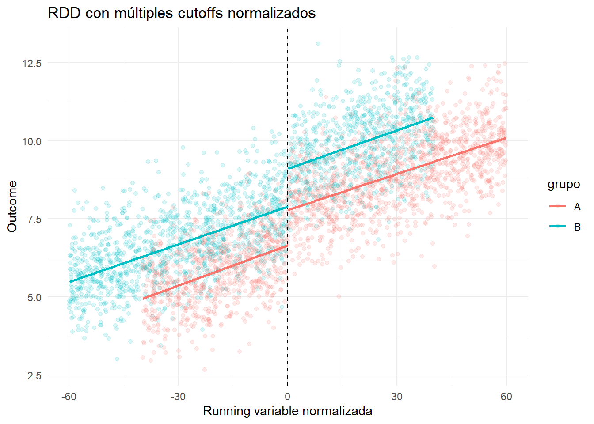
También puedes estimar por cutoff/grupo:
multi_by_group <- df_multi |>
group_split(grupo) |>
map_dfr(function(d) {
est <- rdrobust(y = d$y, x = d$x_norm, c = 0)
tibble(
grupo = unique(d$grupo),
tau = est$coef["Robust", 1],
se = est$se["Robust", 1],
ci_low = est$ci["Robust", 1],
ci_high = est$ci["Robust", 2]
)
})
multi_by_group# A tibble: 2 × 5
grupo tau se ci_low ci_high
<chr> <dbl> <dbl> <dbl> <dbl>
1 A 1.39 0.208 0.980 1.80
2 B 1.18 0.225 0.740 1.6244 44. Running variable discreta
A veces (X) es discreta: edad en años, nota redondeada, población agrupada.
df_discrete <- df_sharp |>
mutate(
x_discrete = round(x, 1)
)
ggplot(df_discrete, aes(x = x_discrete)) +
geom_histogram(binwidth = 0.1, boundary = 0) +
geom_vline(xintercept = cutoff, linetype = "dashed") +
labs(
title = "Running variable discreta",
x = "Running variable redondeada",
y = "Frecuencia"
) +
theme_minimal()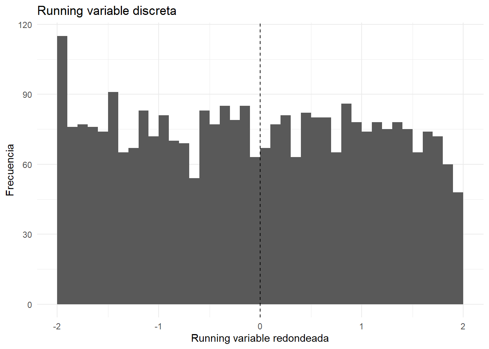
Estimación:
rd_discrete <- rdrobust(
y = df_discrete$y,
x = df_discrete$x_discrete,
c = cutoff
)
summary(rd_discrete)Sharp RD estimates using local polynomial regression.
Number of Obs. 3000
BW type mserd
Kernel Triangular
VCE method NN
Number of Obs. 1479 1521
Eff. Number of Obs. 249 288
Order est. (p) 1 1
Order bias (q) 2 2
BW est. (h) 0.305 0.305
BW bias (b) 0.562 0.562
rho (h/b) 0.543 0.543
Unique Obs. 20 21
=====================================================================
Point Robust Inference
Estimate z P>|z| [ 95% C.I. ]
---------------------------------------------------------------------
RD Effect 0.774 2.671 0.008 [0.209 , 1.362]
=====================================================================Con running discreta conviene:
- mostrar gráficos por bins;
- hacer sensibilidad a ventanas;
- ser conservador con inferencia;
- comprobar cuántos valores distintos hay cerca del cutoff.
45 45. RD in time
A veces la running variable es tiempo: fecha, día, mes o año.
Ejemplo: una reforma entra en vigor en una fecha concreta.
Esto se parece a un RDD, pero es más delicado porque justo en una fecha pueden cambiar muchas otras cosas.
Generamos un ejemplo simple:
set.seed(777)
df_time <- tibble(
day = -200:200
) |>
mutate(
post = as.integer(day >= 0),
season = sin(day / 20),
y = 10 + 0.02 * day + season + 1.5 * post + rnorm(n(), 0, 0.8)
)
ggplot(df_time, aes(day, y)) +
geom_point(alpha = 0.5) +
geom_vline(xintercept = 0, linetype = "dashed") +
geom_smooth(data = filter(df_time, day < 0), method = "lm", se = FALSE) +
geom_smooth(data = filter(df_time, day >= 0), method = "lm", se = FALSE) +
theme_minimal()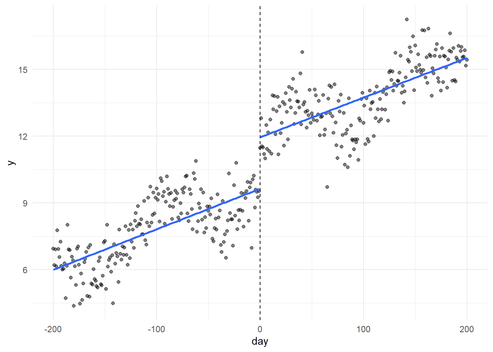
Estimación:
rd_time <- rdrobust(
y = df_time$y,
x = df_time$day,
c = 0
)
summary(rd_time)Sharp RD estimates using local polynomial regression.
Number of Obs. 401
BW type mserd
Kernel Triangular
VCE method NN
Number of Obs. 200 201
Eff. Number of Obs. 33 34
Order est. (p) 1 1
Order bias (q) 2 2
BW est. (h) 33.663 33.663
BW bias (b) 87.545 87.545
rho (h/b) 0.385 0.385
Unique Obs. 200 201
=====================================================================
Point Robust Inference
Estimate z P>|z| [ 95% C.I. ]
---------------------------------------------------------------------
RD Effect 2.033 4.326 0.000 [0.988 , 2.626]
=====================================================================Advertencia:
RD in time exige justificar que no hay otros shocks coincidentes en la fecha del cutoff.
46 46. Sensibilidad a ventanas temporales o de muestra
No solo hay que hacer robustez a bandwidth. También puede ser razonable restringir la muestra.
df_restricted <- df_sharp |>
filter(x >= -1.5, x <= 1.5)
rd_restricted <- rdrobust(
y = df_restricted$y,
x = df_restricted$x,
c = cutoff
)
summary(rd_restricted)Sharp RD estimates using local polynomial regression.
Number of Obs. 2265
BW type mserd
Kernel Triangular
VCE method NN
Number of Obs. 1134 1131
Eff. Number of Obs. 360 311
Order est. (p) 1 1
Order bias (q) 2 2
BW est. (h) 0.446 0.446
BW bias (b) 0.709 0.709
rho (h/b) 0.629 0.629
Unique Obs. 1134 1131
=====================================================================
Point Robust Inference
Estimate z P>|z| [ 95% C.I. ]
---------------------------------------------------------------------
RD Effect 1.419 5.914 0.000 [0.929 , 1.850]
=====================================================================47 47. Clustering
Si los datos tienen estructura agrupada, por ejemplo estudiantes dentro de colegios o individuos dentro de municipios, puede ser necesario clusterizar.
set.seed(222)
df_cluster <- df_sharp |>
mutate(
municipio = sample(1:100, n(), replace = TRUE)
)
rd_cluster <- rdrobust(
y = df_cluster$y,
x = df_cluster$x,
c = cutoff,
cluster = df_cluster$municipio
)
summary(rd_cluster)Sharp RD estimates using local polynomial regression.
Number of Obs. 3000
BW type mserd
Kernel Triangular
VCE method NN
Number of Obs. 1516 1484
Eff. Number of Obs. 525 511
Order est. (p) 1 1
Order bias (q) 2 2
BW est. (h) 0.690 0.690
BW bias (b) 1.066 1.066
rho (h/b) 0.648 0.648
Unique Obs. 1516 1484
=====================================================================
Point Robust Inference
Estimate z P>|z| [ 95% C.I. ]
---------------------------------------------------------------------
RD Effect 1.451 8.215 0.000 [1.093 , 1.778]
=====================================================================Usa clustering cuando:
- tratamiento o running se definen a nivel grupo;
- hay shocks compartidos dentro de grupos;
- hay correlación intra-cluster.
48 48. Pocos clusters y potencia
RDD suele tener menos potencia que otros diseños porque usa variación local.
Problemas frecuentes:
- pocas observaciones cerca del cutoff;
- bandwidth estrecho;
- outcome ruidoso;
- fuzzy con primer paso débil;
- pocos clusters;
- tratamiento definido a nivel agregado.
Si hay pocos clusters, los errores estándar convencionales pueden ser poco fiables. En ese caso, considera:
- wild bootstrap;
- inferencia por permutación si procede;
- análisis gráfico transparente;
- cautela en conclusiones.
49 49. Local randomization approach
Otra forma de pensar un RDD es como un experimento local en una ventana muy estrecha alrededor del cutoff.
La idea:
- elegir una ventana pequeña alrededor de (c);
- comprobar balance de covariables;
- comparar tratados y controles dentro de esa ventana como si la asignación fuera casi aleatoria.
Ejemplo simple:
window_lr <- 0.25
df_lr <- df_sharp |>
filter(abs(x - cutoff) <= window_lr)
balance_lr <- df_lr |>
group_by(treat) |>
summarise(
n = n(),
z1_mean = mean(z1),
z2_mean = mean(z2),
y_mean = mean(y),
.groups = "drop"
)
balance_lr# A tibble: 2 × 5
treat n z1_mean z2_mean y_mean
<int> <int> <dbl> <dbl> <dbl>
1 0 201 0.0386 0.537 1.75
2 1 170 -0.0541 0.553 3.61Diferencia simple en la ventana:
lr_mod <- feols(
y ~ treat,
data = df_lr,
vcov = "hetero"
)
summary(lr_mod)OLS estimation, Dep. Var.: y
Observations: 371
Standard-errors: Heteroskedasticity-robust
Estimate Std. Error t value Pr(>|t|)
(Intercept) 1.74790 0.064826 26.9629 < 2.2e-16 ***
treat 1.85981 0.098901 18.8047 < 2.2e-16 ***
---
Signif. codes: 0 '***' 0.001 '**' 0.01 '*' 0.05 '.' 0.1 ' ' 1
RMSE: 0.942029 Adj. R2: 0.490395Este enfoque es útil como complemento, especialmente si puedes justificar una ventana local muy estrecha.
50 50. Heterogeneidad en RDD
Puedes preguntar si el efecto local cambia por subgrupos.
rd_z2_0 <- rdrobust(
y = df_sharp$y[df_sharp$z2 == 0],
x = df_sharp$x[df_sharp$z2 == 0],
c = cutoff
)
rd_z2_1 <- rdrobust(
y = df_sharp$y[df_sharp$z2 == 1],
x = df_sharp$x[df_sharp$z2 == 1],
c = cutoff
)
hetero_table <- tibble(
subgrupo = c("z2 = 0", "z2 = 1"),
tau = c(rd_z2_0$coef["Robust", 1], rd_z2_1$coef["Robust", 1]),
se = c(rd_z2_0$se["Robust", 1], rd_z2_1$se["Robust", 1]),
ci_low = c(rd_z2_0$ci["Robust", 1], rd_z2_1$ci["Robust", 1]),
ci_high = c(rd_z2_0$ci["Robust", 2], rd_z2_1$ci["Robust", 2])
)
hetero_table# A tibble: 2 × 5
subgrupo tau se ci_low ci_high
<chr> <dbl> <dbl> <dbl> <dbl>
1 z2 = 0 1.29 0.276 0.745 1.83
2 z2 = 1 1.58 0.207 1.17 1.98ggplot(hetero_table, aes(x = subgrupo, y = tau)) +
geom_hline(yintercept = 0, linetype = "dashed") +
geom_point() +
geom_errorbar(aes(ymin = ci_low, ymax = ci_high), width = 0.15) +
labs(
title = "Heterogeneidad del efecto local por subgrupo",
x = "Subgrupo",
y = "Efecto local estimado"
) +
theme_minimal()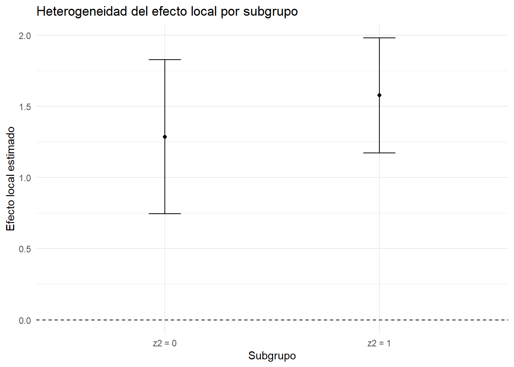
Cuidado:
- necesitas suficiente muestra cerca del cutoff;
- aumenta la varianza;
- evita búsqueda indiscriminada de subgrupos significativos.
51 51. Comparación final de robustez
robust_summary <- bind_rows(
tibble(
especificacion = "Principal rdrobust",
tau = rd_sharp$coef["Robust", 1],
se = rd_sharp$se["Robust", 1],
ci_low = rd_sharp$ci["Robust", 1],
ci_high = rd_sharp$ci["Robust", 2]
),
tibble(
especificacion = "Con covariables",
tau = rd_covs$coef["Robust", 1],
se = rd_covs$se["Robust", 1],
ci_low = rd_covs$ci["Robust", 1],
ci_high = rd_covs$ci["Robust", 2]
),
tibble(
especificacion = "Donut",
tau = rd_donut$coef["Robust", 1],
se = rd_donut$se["Robust", 1],
ci_low = rd_donut$ci["Robust", 1],
ci_high = rd_donut$ci["Robust", 2]
),
tibble(
especificacion = "Fuzzy",
tau = rd_fuzzy$coef["Robust", 1],
se = rd_fuzzy$se["Robust", 1],
ci_low = rd_fuzzy$ci["Robust", 1],
ci_high = rd_fuzzy$ci["Robust", 2]
)
)
robust_summary# A tibble: 4 × 5
especificacion tau se ci_low ci_high
<chr> <dbl> <dbl> <dbl> <dbl>
1 Principal rdrobust 1.43 0.177 1.08 1.78
2 Con covariables 1.46 0.178 1.11 1.81
3 Donut 1.49 0.219 1.06 1.92
4 Fuzzy 2.19 0.348 1.51 2.87datasummary_df(robust_summary)| especificacion | tau | se | ci_low | ci_high |
|---|---|---|---|---|
| Principal rdrobust | 1.43 | 0.18 | 1.08 | 1.78 |
| Con covariables | 1.46 | 0.18 | 1.11 | 1.81 |
| Donut | 1.49 | 0.22 | 1.06 | 1.92 |
| Fuzzy | 2.19 | 0.35 | 1.51 | 2.87 |
# write_csv(robust_summary, "salidas/rdd_resumen_robustez.csv")
# datasummary_df(robust_summary, output = "salidas/rdd_resumen_robustez.html")52 52. Gráfico final de especificaciones
ggplot(robust_summary, aes(x = reorder(especificacion, tau), y = tau)) +
geom_hline(yintercept = 0, linetype = "dashed") +
geom_point() +
geom_errorbar(aes(ymin = ci_low, ymax = ci_high), width = 0.15) +
coord_flip() +
labs(
title = "Comparación de especificaciones RDD",
x = "Especificación",
y = "Efecto estimado"
) +
theme_minimal()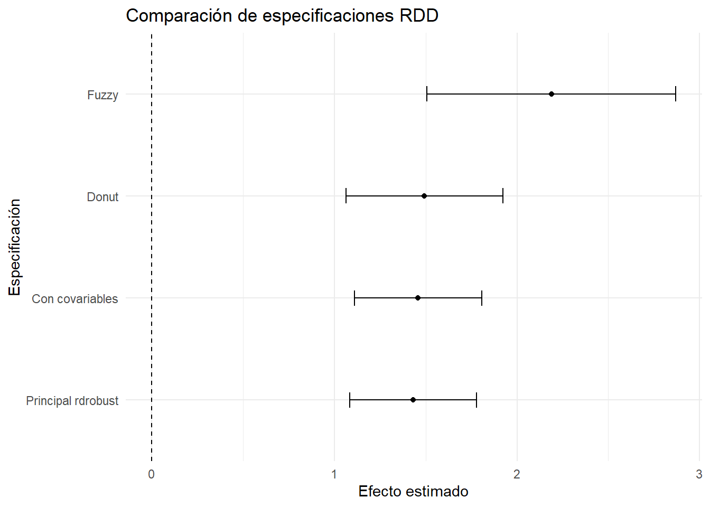
53 53. Checklist de validez de un RDD
Antes de confiar en un RDD, revisa:
- ¿La regla institucional está clara?
- ¿El cutoff es conocido y no elegido ex post?
- ¿La running variable se mide antes del tratamiento?
- ¿El tratamiento cambia realmente en el cutoff?
- ¿Sharp o fuzzy?
- ¿Hay suficientes observaciones cerca del cutoff?
- ¿La densidad de la running variable es continua?
- ¿Las covariables predeterminadas son continuas?
- ¿El resultado es robusto a bandwidths?
- ¿El resultado es robusto a kernel y orden polinómico?
- ¿Hay evidencia de manipulación?
- ¿Tiene sentido hacer donut?
- ¿La interpretación se limita a unidades marginales?
- ¿La inferencia está bien especificada, incluyendo clustering si corresponde?
- ¿Hay otros cambios institucionales en el mismo cutoff?
54 54. Plantilla rápida de RDD sharp
library(tidyverse)
library(rdrobust)
library(rddensity)
library(modelsummary)
# Variables:
# y = outcome
# x = running variable
# c0 = cutoff
c0 <- 0
# 1. Gráfico
rdplot(y = df$y, x = df$x, c = c0)
# 2. Estimación principal
rd_main <- rdrobust(y = df$y, x = df$x, c = c0)
summary(rd_main)
# 3. Manipulación
dens <- rddensity(X = df$x, c = c0)
summary(dens)
rdplotdensity(dens, X = df$x)
# 4. Covariables predeterminadas
rd_cov1 <- rdrobust(y = df$cov1, x = df$x, c = c0)
summary(rd_cov1)
# 5. Robustez bandwidth
bandwidths <- c(0.5, 1, 1.5)
bw_results <- purrr::map_dfr(bandwidths, function(h) {
est <- rdrobust(y = df$y, x = df$x, c = c0, h = h)
tibble(
h = h,
tau = est$coef["Robust", 1],
se = est$se["Robust", 1],
ci_low = est$ci["Robust", 1],
ci_high = est$ci["Robust", 2]
)
})
bw_results55 55. Plantilla rápida de fuzzy RDD
# d = tratamiento recibido
# z = elegibilidad inducida por cutoff: normalmente 1(x >= c0)
# 1. Primer paso
rd_first_stage <- rdrobust(y = df$d, x = df$x, c = c0)
summary(rd_first_stage)
# 2. Fuzzy RDD
rd_fuzzy <- rdrobust(
y = df$y,
x = df$x,
c = c0,
fuzzy = df$d
)
summary(rd_fuzzy)56 56. Plantilla rápida de donut RDD
donut <- 0.05
df_donut <- df |>
filter(abs(x - c0) > donut)
rd_donut <- rdrobust(
y = df_donut$y,
x = df_donut$x,
c = c0
)
summary(rd_donut)57 57. Plantilla rápida de kink design
df <- df |>
mutate(
x_c = x - c0,
kink = pmax(x_c, 0)
)
kink_mod <- feols(
y ~ x_c + kink,
data = df,
vcov = "hetero"
)
summary(kink_mod)58 58. Cómo escribir resultados en un informe
Una estructura razonable:
- Regla institucional.
- Running variable y cutoff.
- Tipo de diseño: sharp/fuzzy/kink.
- Gráfico descriptivo.
- Estimación principal.
- Diagnósticos:
- densidad;
- covariables;
- primer paso si fuzzy.
- Robustez:
- bandwidth;
- kernel;
- polinomio;
- donut;
- placebos.
- Interpretación local.
- Limitaciones.
58.1 58.1. Texto modelo para sharp RDD
Estimamos un diseño de regresión discontinua explotando el umbral institucional (c) en la variable de asignación (X). La especificación principal usa regresiones locales polinómicas a ambos lados del punto de corte, con selección de bandwidth basada en procedimientos data-driven e inferencia robusta a sesgo. Dado que el tratamiento cambia de forma determinística al cruzar el cutoff, el salto estimado en el outcome se interpreta como el efecto causal local del tratamiento bajo continuidad de los outcomes potenciales y ausencia de manipulación precisa de la running variable.
58.2 58.2. Texto modelo para fuzzy RDD
El cutoff genera un salto en la probabilidad de tratamiento, pero no determina perfectamente la participación. Por ello estimamos un fuzzy RDD, equivalente a un Wald local, que identifica un efecto local para las unidades compliers alrededor del umbral. Reportamos tanto el primer paso como la estimación fuzzy del efecto causal local.
58.3 58.3. Texto modelo para robustez
Evaluamos la sensibilidad del resultado a distintas ventanas de estimación, kernels y órdenes polinómicos. Además, realizamos tests de manipulación de la running variable, contrastes de continuidad de covariables predeterminadas, placebo cutoffs y una especificación donut. Los resultados deben interpretarse como evidencia local alrededor del cutoff.
59 59. Errores comunes
- Interpretar el RDD como efecto medio para toda la población.
- No graficar los datos.
- Usar polinomios globales de alto orden.
- Elegir bandwidth mirando significatividad.
- Ignorar manipulación de la running variable.
- No comprobar que el tratamiento salta en fuzzy RDD.
- Usar sharp cuando en realidad hay non-compliance.
- Usar fuzzy sin primer paso claro.
- Meter covariables post-tratamiento.
- No hacer robustez a bandwidth.
- No interpretar el efecto como local.
- Olvidar clustering cuando corresponde.
- Hacer donut sin justificarlo.
- Confundir salto en pendiente con salto en nivel.
- No comprobar otros cambios institucionales en el cutoff.
60 60. Referencias prácticas
Para profundizar:
- Lee y Lemieux: revisión aplicada clásica de RDD.
- Calonico, Cattaneo y Titiunik: inferencia robusta para RDD.
- Calonico, Cattaneo, Farrell y Titiunik: bandwidths, cobertura y covariables.
- Cattaneo, Jansson y Ma: manipulación de la running variable y
rddensity. - Documentación de
rdrobust,rddensityyrdplot.